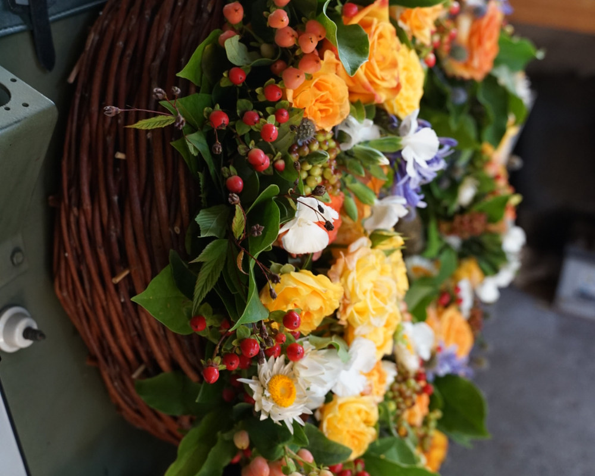

Trauerfloristik – direkt am Friedhof
In einer schweren Zeit nehmen wir Ihnen gern etwas ab – einfühlsam, persönlich und unkompliziert.
Der Abschied von einem geliebten Menschen fällt schwer. Mit unserer Trauerfloristik möchten wir Ihnen in dieser Zeit zur Seite stehen und einen würdevollen Rahmen schaffen. Unsere Gärtnerei liegt direkt am Friedhof Dettenhausen – so sind wir schnell und unkompliziert für Sie da, auch kurzfristig.
Unsere Trauerfloristik im Überblick
- Kränze – klassisch oder modern gebunden
- Sarggestecke – als zentraler Blumenschmuck für die Trauerfeier
- Urnengestecke – passend für die Urnenbeisetzung
- Trauersträuße & Grabschmuck – zum Abschied und zum Gedenken
Sie wissen nicht genau, was Sie brauchen? Das ist völlig in Ordnung. Wir beraten Sie in Ruhe und ohne Eile und gestalten den Blumenschmuck nach Ihren Wünschen und im Sinne des Verstorbenen.
Auch über den Abschied hinaus
Nach der Beisetzung kümmern wir uns auf Wunsch weiter um die Grabstätte – von der Neuanlage bis zur dauerhaften Pflege. Mehr dazu finden Sie auf unserer Seite Grab- & Dauergrabpflege.
Als Mitglied der Genossenschaft württembergischer Friedhofsgärtner arbeiten wir nach anerkannten fachlichen Standards.
Häufige Fragen
Sind Sie auch kurzfristig erreichbar?
Ja. Trauerfälle richten sich nicht nach Öffnungszeiten – rufen Sie einfach an, wir finden eine Lösung, auch außerhalb der regulären Zeiten.
Kümmern Sie sich auch um das Grab nach der Beisetzung?
Gerne. Wir bieten Grabneuanlage, saisonale Bepflanzung und Dauergrabpflege an – auf Wunsch mit Treuhandvertrag.